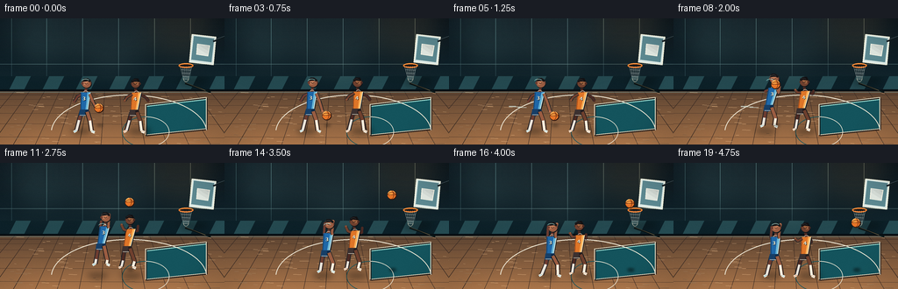
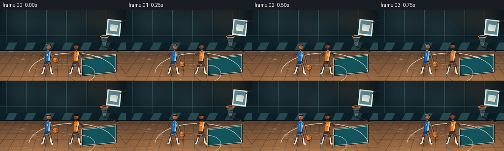
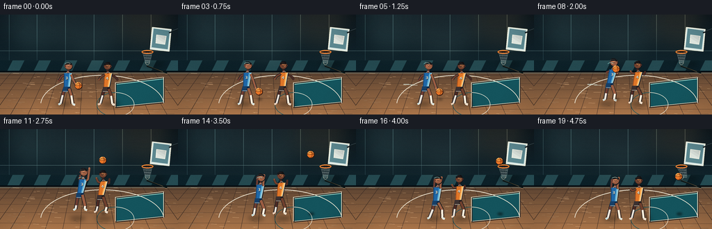

CODING AGENTS AS PIXEL WORLD MODELS
traex/DeepSeek-V4.1-Flash · instance_preservation_0035
点击播放 · 原生 RGB 像素
逐轮保存的候选
回放视频、检查图与代码变化。
每份候选均可单独播放。实际图片检查记录在下方工具轨迹中。
候选 01播放与检查图
点击播放 · 原生 RGB 像素

展开代码变化
--- 上一保存版本
+++ 本次保存版本
@@ -0,0 +1,553 @@
+from pathlib import Path
+import math
+import random
+
+import numpy as np
+from PIL import Image, ImageDraw, ImageFilter, ImageFont
+
+import artifact_io
+
+
+CASE_DIR = Path(__file__).resolve().parent
+W, H = 256, 144
+FPS = 4
+FRAMES = 20
+SS = 4
+FONT_PATH = "/usr/share/fonts/truetype/dejavu/DejaVuSans-Bold.ttf"
+
+
+def sc(value):
+ return int(round(value * SS))
+
+
+def pt(x, y):
+ return (sc(x), sc(y))
+
+
+def box(x0, y0, x1, y1):
+ return (sc(x0), sc(y0), sc(x1), sc(y1))
+
+
+def rgba(hex_color, alpha=255):
+ if isinstance(hex_color, tuple):
+ if len(hex_color) == 4 and alpha == 255:
+ return hex_color
+ return tuple(hex_color[:3]) + (alpha,)
+ hex_color = hex_color.lstrip("#")
+ return tuple(int(hex_color[i:i + 2], 16) for i in (0, 2, 4)) + (alpha,)
+
+
+def mix(a, b, t):
+ return tuple(int(a[i] * (1 - t) + b[i] * t) for i in range(len(a)))
+
+
+def smoothstep(t):
+ t = max(0.0, min(1.0, t))
+ return t * t * (3 - 2 * t)
+
+
+def lerp(a, b, t):
+ return a + (b - a) * t
+
+
+def sample_curve(values, t):
+ t = max(0.0, min(len(values) - 1.0, t))
+ i = int(math.floor(t))
+ j = min(i + 1, len(values) - 1)
+ return lerp(values[i], values[j], t - i)
+
+
+def line(draw, points, fill, width, joint="curve"):
+ draw.line([pt(x, y) for x, y in points], fill=fill, width=sc(width), joint=joint)
+
+
+def circle(draw, x, y, radius, fill=None, outline=None, width=1):
+ draw.ellipse(box(x - radius, y - radius, x + radius, y + radius),
+ fill=fill, outline=outline, width=sc(width))
+
+
+def polygon(draw, points, fill):
+ draw.polygon([pt(x, y) for x, y in points], fill=fill)
+
+
+def make_gradient(size, top, bottom):
+ w, h = size
+ strip = np.zeros((h, 1, 3), dtype=np.uint8)
+ for y in range(h):
+ t = y / max(1, h - 1)
+ strip[y, 0] = mix(top, bottom, t)
+ return Image.fromarray(np.repeat(strip, w, axis=1), "RGB")
+
+
+def draw_background():
+ image = make_gradient((W * SS, H * SS), (8, 19, 27), (27, 55, 62)).convert("RGBA")
+ draw = ImageDraw.Draw(image, "RGBA")
+
+ # Architectural wall panels and a restrained upper light wash.
+ for x in (13, 53, 94, 135, 176, 217):
+ draw.line([pt(x, 0), pt(x, 78)], fill=rgba("#31515a", 52), width=sc(0.45))
+ draw.line([pt(0, 52), pt(256, 52)], fill=rgba("#55757b", 35), width=sc(0.45))
+ draw.rectangle(box(0, 66, 256, 84), fill=rgba("#0c2028", 92))
+ for x in range(-20, 280, 38):
+ polygon(draw, [(x, 66), (x + 17, 66), (x + 8, 84), (x - 9, 84)],
+ rgba("#254b52", 72))
+
+ glow = Image.new("RGBA", image.size, (0, 0, 0, 0))
+ gd = ImageDraw.Draw(glow, "RGBA")
+ for x, y, radius, color in (
+ (48, 11, 48, (160, 217, 208, 30)),
+ (127, 8, 58, (190, 227, 212, 24)),
+ (210, 12, 42, (255, 201, 128, 25)),
+ ):
+ gd.ellipse(box(x - radius, y - radius, x + radius, y + radius), fill=color)
+ glow = glow.filter(ImageFilter.GaussianBlur(sc(15)))
+ image.alpha_composite(glow)
+
+ # Cool maple floor with perspective seams and a small amount of grain.
+ floor = make_gradient((W * SS, 62 * SS), (92, 68, 50), (170, 117, 74)).convert("RGBA")
+ floor_mask = Image.new("L", floor.size, 0)
+ ImageDraw.Draw(floor_mask).rectangle(box(0, 0, 256, 62), fill=255)
+ image.paste(floor, (0, sc(82)), floor_mask)
+ draw = ImageDraw.Draw(image, "RGBA")
+
+ seam_color = rgba("#3e2d25", 74)
+ for y in (87, 92, 99, 108, 120, 135):
+ draw.line([pt(0, y), pt(256, y + (y - 82) * 0.025)], fill=seam_color, width=sc(0.55))
+ vanish_x = 128
+ for x in range(-110, 390, 25):
+ bottom_x = x
+ top_x = vanish_x + (x - vanish_x) * 0.68
+ draw.line([pt(top_x, 82), pt(bottom_x, 144)], fill=rgba("#3a2b24", 52), width=sc(0.42))
+ rng = random.Random(19)
+ for _ in range(95):
+ y = rng.uniform(83, 143)
+ x = rng.uniform(0, 256)
+ length = rng.uniform(2, 12)
+ draw.line([pt(x, y), pt(x + length, y + 0.15)], fill=rgba("#f3c390", rng.randint(8, 21)),
+ width=sc(0.28))
+
+ # Painted lane and court lines, foreshortened toward the right-hand basket.
+ lane = [(166, 98), (235, 90), (235, 126), (166, 133)]
+ polygon(draw, lane, rgba("#14545d", 102))
+ polygon(draw, [(166, 98), (235, 90), (235, 93), (166, 101)], rgba("#8dd0c7", 38))
+ for points in (
+ [(166, 98), (235, 90)],
+ [(235, 90), (235, 126)],
+ [(235, 126), (166, 133)],
+ [(166, 133), (166, 98)],
+ ):
+ line(draw, [(x + 0.7, y + 0.9) for x, y in points], rgba("#271f1b", 95), 1.45)
+ line(draw, points, rgba("#e9e0c6", 222), 0.95)
+
+ # Three-point arc and free-throw circle sit on the same floor plane.
+ draw.arc(box(58, 87, 236, 174), 184, 356, fill=rgba("#eee7d4", 205), width=sc(0.95))
+ draw.arc(box(139, 112, 193, 147), 270, 90, fill=rgba("#eee7d4", 195), width=sc(0.82))
+ draw.arc(box(139, 112, 193, 147), 90, 270, fill=rgba("#14545d", 105), width=sc(0.82))
+
+ # Low wall and baseline keep the court grounded.
+ draw.line([pt(0, 82), pt(256, 82)], fill=rgba("#070f14", 150), width=sc(2.2))
+ draw.line([pt(0, 84), pt(256, 84)], fill=rgba("#73918e", 40), width=sc(0.45))
+
+ # Backboard, rim, support, and net.
+ polygon(draw, [(219, 18), (246, 21), (243, 53), (216, 50)], rgba("#dce9e4", 184))
+ polygon(draw, [(221, 20), (244, 23), (241, 50), (218, 47)], rgba("#5c8890", 88))
+ polygon(draw, [(225, 29), (239, 31), (237, 43), (224, 41)], rgba("#e9f0e9", 18))
+ for points, color, width in (
+ ([(219, 18), (246, 21)], "#f5f3dd", 1.1),
+ ([(246, 21), (243, 53)], "#f5f3dd", 1.1),
+ ([(243, 53), (216, 50)], "#f5f3dd", 1.1),
+ ([(216, 50), (219, 18)], "#f5f3dd", 1.1),
+ ([(225, 29), (239, 31), (237, 43), (224, 41), (225, 29)], "#fff9e8", 0.65),
+ ):
+ line(draw, points, rgba(color, 226), width)
+ draw.line([pt(243, 26), pt(256, 22)], fill=rgba("#111c20", 235), width=sc(2.0))
+ draw.line([pt(245, 24), pt(256, 20)], fill=rgba("#708085", 180), width=sc(0.45))
+
+ draw.ellipse(box(203.5, 51.0, 220.5, 56.5), outline=rgba("#24150e", 140), width=sc(2.5))
+ draw.ellipse(box(203.5, 51.0, 220.5, 56.5), outline=rgba("#f37b28", 255), width=sc(1.45))
+ draw.arc(box(204.5, 51.2, 219.5, 55.5), 196, 344, fill=rgba("#ffb15f", 255), width=sc(0.55))
+ net_color = rgba("#d9e2d9", 176)
+ for x in np.linspace(205.2, 218.8, 7):
+ draw.line([pt(x, 54.5), pt(212 + (x - 212) * 0.42, 69.2)], fill=net_color, width=sc(0.32))
+ for y, half in ((58.5, 5.6), (62.2, 4.6), (66.1, 3.7), (69.2, 3.1)):
+ draw.line([pt(212 - half, y), pt(212 + half, y + 0.6)], fill=net_color, width=sc(0.3))
+ draw.arc(box(208.8, 63.0, 215.2, 72.2), 6, 174, fill=rgba("#f9f4db", 80), width=sc(0.38))
+
+ # A narrow shadow under the backboard and a floor reflection add depth.
+ draw.line([pt(211, 74), pt(240, 84)], fill=rgba("#0b1719", 58), width=sc(2.0))
+ draw.line([pt(211, 73), pt(234, 82)], fill=rgba("#d8b078", 18), width=sc(0.55))
+ return image
+
+
+def draw_shadow(base, cx, cy, rx, ry, alpha=90, blur=3.0):
+ layer = Image.new("RGBA", base.size, (0, 0, 0, 0))
+ draw = ImageDraw.Draw(layer, "RGBA")
+ draw.ellipse(box(cx - rx, cy - ry, cx + rx, cy + ry), fill=(3, 9, 10, alpha))
+ layer = layer.filter(ImageFilter.GaussianBlur(sc(blur)))
+ base.alpha_composite(layer)
+
+
+def draw_ball(image, x, y, radius=4.7):
+ draw = ImageDraw.Draw(image, "RGBA")
+ # Contact shadow is deliberately softer than the object.
+ shadow = Image.new("RGBA", image.size, (0, 0, 0, 0))
+ sd = ImageDraw.Draw(shadow, "RGBA")
+ sx = x + 1.2
+ sy = 122.2
+ sd.ellipse(box(sx - radius * 0.8, sy - 1.4, sx + radius * 0.8, sy + 1.4),
+ fill=(4, 10, 10, 95))
+ shadow = shadow.filter(ImageFilter.GaussianBlur(sc(1.4)))
+ image.alpha_composite(shadow)
+
+ circle(draw, x + 0.4, y + 0.5, radius + 0.65, fill=rgba("#32170e", 165))
+ circle(draw, x, y, radius, fill=rgba("#e87527"))
+ draw.arc(box(x - radius, y - radius, x + radius, y + radius), 203, 339,
+ fill=rgba("#ffb65f", 210), width=sc(0.72))
+ circle(draw, x - 1.3, y - 1.5, radius * 0.48, fill=rgba("#ff9f42", 105))
+ seam = rgba("#54230f", 235)
+ draw.line([pt(x - radius, y), pt(x + radius, y)], fill=seam, width=sc(0.42))
+ draw.arc(box(x - radius * 0.55, y - radius, x + radius * 0.55, y + radius),
+ 270, 90, fill=seam, width=sc(0.42))
+ draw.arc(box(x - radius, y - radius * 0.55, x + radius, y + radius * 0.55),
+ 180, 360, fill=seam, width=sc(0.42))
+ draw.line([pt(x - radius * 0.72, y - radius * 0.7), pt(x - radius * 0.25, y - radius * 0.85)],
+ fill=rgba("#ffc078", 100), width=sc(0.34))
+
+
+def draw_player(image, x, lift, palette, pose, number, scale=1.0, facing=1):
+ draw = ImageDraw.Draw(image, "RGBA")
+ skin = palette["skin"]
+ skin_light = palette["skin_light"]
+ skin_shadow = palette["skin_shadow"]
+ jersey = palette["jersey"]
+ jersey_dark = palette["jersey_dark"]
+ jersey_light = palette["jersey_light"]
+ shorts = palette["shorts"]
+ shorts_dark = palette["shorts_dark"]
+ shoe = palette["shoe"]
+ shoe_accent = palette["shoe_accent"]
+
+ bob = pose.get("bob", 0.0)
+ lean = pose.get("lean", 0.0) * facing
+ hip_y = 105.4 - lift + bob
+ shoulder_y = 84.5 - lift + bob
+ head_y = 73.8 - lift + bob
+ hip_x = x
+ shoulder_x = x + lean
+ head_x = shoulder_x + 1.0 * facing
+ bend = pose.get("bend", 0.0)
+ reach = pose.get("reach", 0.0)
+
+ # Legs are drawn from back to front so the stance reads clearly at small size.
+ hip_l = (hip_x - 3.2, hip_y + 1.4)
+ hip_r = (hip_x + 3.2, hip_y + 1.2)
+ knee_l = (hip_x - 6.2 + bend * 0.30, 116.0 - lift * 0.52 + bob)
+ knee_r = (hip_x + 6.0 + bend * 0.58, 116.6 - lift * 0.48 + bob)
+ ankle_l = (hip_x - 8.7 - bend * 0.18, 128.1 - lift)
+ ankle_r = (hip_x + 8.1 + bend * 0.20, 128.5 - lift)
+ if pose.get("air", 0) > 0.15:
+ ankle_l = (hip_x - 6.8, 126.8 - lift + bend * 0.12)
+ ankle_r = (hip_x + 6.3, 127.2 - lift + bend * 0.08)
+
+ # Rear leg and rear arm have a slightly cooler tone.
+ line(draw, [hip_l, knee_l, ankle_l], rgba("#1a2026", 190), 4.8 * scale)
+ line(draw, [hip_l, knee_l, ankle_l], skin_shadow, 3.45 * scale)
+ line(draw, [knee_l, ankle_l], rgba("#e8e5db", 230), 2.7 * scale)
+ line(draw, [ankle_l, (ankle_l[0] - 3.0, ankle_l[1] + 1.6)], shoe, 2.9 * scale)
+ line(draw, [ankle_l, (ankle_l[0] - 3.0, ankle_l[1] + 1.6)], shoe_accent, 0.55 * scale)
+
+ back_shoulder = (shoulder_x - 4.5 * facing, shoulder_y + 2.0)
+ if pose.get("guard_arm") is not None:
+ elbow, hand = pose["guard_arm"]
+ elbow = (shoulder_x + elbow[0] * facing, shoulder_y + elbow[1])
+ hand = (shoulder_x + hand[0] * facing, shoulder_y + hand[1])
+ else:
+ elbow = (shoulder_x - 7.5 * facing, shoulder_y + 10.0)
+ hand = (shoulder_x - 9.4 * facing, shoulder_y + 16.5)
+ line(draw, [back_shoulder, elbow, hand], rgba("#202328", 180), 3.65 * scale)
+ line(draw, [back_shoulder, elbow, hand], skin_shadow, 2.55 * scale)
+ circle(draw, hand[0], hand[1], 1.25 * scale, fill=skin_shadow)
+
+ # Torso with a slight forward lean and a clean jersey silhouette.
+ shoulder_w = 5.5 * scale
+ hip_w = 4.2 * scale
+ torso = [
+ (shoulder_x - shoulder_w, shoulder_y),
+ (shoulder_x + shoulder_w, shoulder_y - 0.5),
+ (hip_x + hip_w, hip_y - 1.4),
+ (hip_x - hip_w, hip_y - 0.8),
+ ]
+ polygon(draw, [(px + 0.7, py + 0.9) for px, py in torso], rgba("#12191d", 110))
+ polygon(draw, torso, jersey)
+ polygon(draw, [(shoulder_x + 2.2, shoulder_y + 0.3),
+ (shoulder_x + shoulder_w, shoulder_y - 0.2),
+ (hip_x + hip_w - 0.4, hip_y - 1.5),
+ (hip_x + 1.4, hip_y - 1.4)], rgba(jersey_light, 95))
+ line(draw, [(shoulder_x - shoulder_w + 0.4, shoulder_y + 0.8),
+ (hip_x - hip_w + 0.4, hip_y - 0.8)], rgba(jersey_dark, 190), 0.9 * scale)
+ line(draw, [(shoulder_x + shoulder_w - 0.4, shoulder_y + 0.3),
+ (hip_x + hip_w - 0.4, hip_y - 1.6)], rgba("#f5f2df", 195), 0.65 * scale)
+ # Neck and jersey collar.
+ line(draw, [(shoulder_x - 0.2, shoulder_y - 0.2), (head_x, head_y + 5.1)],
+ skin_shadow, 3.0 * scale)
+ draw.arc(box(shoulder_x - 2.7, shoulder_y - 2.1, shoulder_x + 2.8, shoulder_y + 2.4),
+ 196, 344, fill=rgba("#f2edd8", 220), width=sc(0.62))
+
+ # Shorts flare at the hips; the front leg and shoe overlay them.
+ shorts_poly = [
+ (hip_x - 5.1, hip_y - 1.5),
+ (hip_x + 5.0, hip_y - 1.7),
+ (hip_x + 6.1, hip_y + 6.2),
+ (hip_x + 1.0, hip_y + 5.2),
+ (hip_x - 1.2, hip_y + 6.3),
+ (hip_x - 6.2, hip_y + 5.2),
+ ]
+ polygon(draw, shorts_poly, shorts)
+ polygon(draw, [(hip_x + 1.2, hip_y - 0.6), (hip_x + 5.0, hip_y - 1.4),
+ (hip_x + 5.5, hip_y + 5.4), (hip_x + 1.1, hip_y + 4.2)],
+ rgba(shorts_dark, 105))
+ line(draw, [(hip_x - 5.1, hip_y + 4.8), (hip_x + 5.6, hip_y + 4.8)],
+ rgba("#f4f0dc", 155), 0.55 * scale)
+
+ # Front leg.
+ line(draw, [hip_r, knee_r, ankle_r], rgba("#11171a", 210), 5.1 * scale)
+ line(draw, [hip_r, knee_r, ankle_r], skin, 3.75 * scale)
+ line(draw, [knee_r, ankle_r], rgba("#f4f0df", 235), 2.75 * scale)
+ line(draw, [ankle_r, (ankle_r[0] + 3.4, ankle_r[1] + 1.45)], shoe, 3.0 * scale)
+ line(draw, [ankle_r, (ankle_r[0] + 3.4, ankle_r[1] + 1.45)], shoe_accent, 0.65 * scale)
+ line(draw, [ankle_r, (ankle_r[0] + 3.4, ankle_r[1] + 1.45)], rgba("#f4f0db", 205),
+ 0.45 * scale)
+
+ # Front arm, posed independently for dribble, gather, and release.
+ front_shoulder = (shoulder_x + 4.7 * facing, shoulder_y + 1.7)
+ elbow2, hand2 = pose["shooting_arm"]
+ elbow2 = (shoulder_x + elbow2[0] * facing, shoulder_y + elbow2[1])
+ hand2 = (shoulder_x + hand2[0] * facing, shoulder_y + hand2[1])
+ line(draw, [front_shoulder, elbow2, hand2], rgba("#1b2024", 190), 3.9 * scale)
+ line(draw, [front_shoulder, elbow2, hand2], skin, 2.7 * scale)
+ circle(draw, hand2[0], hand2[1], 1.35 * scale, fill=skin)
+ circle(draw, hand2[0] - 0.4 * facing, hand2[1] - 0.35, 0.68 * scale, fill=skin_light)
+
+ # Head, ear, hair, and a tiny nose make the three-quarter profile readable.
+ circle(draw, head_x + 0.5, head_y + 0.8, 5.3 * scale, fill=rgba("#101519", 100))
+ circle(draw, head_x, head_y, 5.15 * scale, fill=skin)
+ circle(draw, head_x - 1.5 * facing, head_y - 1.3, 3.4 * scale, fill=skin_light)
+ circle(draw, head_x - 4.7 * facing, head_y + 0.3, 1.3 * scale, fill=skin_shadow)
+ polygon(draw, [
+ (head_x - 5.1 * facing, head_y - 1.4),
+ (head_x - 3.0 * facing, head_y - 5.5),
+ (head_x + 1.2 * facing, head_y - 5.7),
+ (head_x + 4.8 * facing, head_y - 3.2),
+ (head_x + 4.4 * facing, head_y - 0.8),
+ (head_x + 1.5 * facing, head_y - 2.2),
+ (head_x - 2.0 * facing, head_y - 1.8),
+ ], palette["hair"])
+ draw.arc(box(head_x - 4.2, head_y - 4.2, head_x + 2.4, head_y + 0.6),
+ 202, 336, fill=rgba(palette["hair_light"], 125), width=sc(0.48))
+ polygon(draw, [(head_x + 4.8 * facing, head_y - 0.8),
+ (head_x + 5.8 * facing, head_y + 0.5),
+ (head_x + 4.4 * facing, head_y + 1.1)], skin_shadow)
+ draw.arc(box(head_x - 2.2, head_y - 2.7, head_x + 1.4, head_y + 1.2),
+ 10, 160, fill=rgba("#1a1110", 190), width=sc(0.38))
+ draw.line([pt(head_x + 2.3 * facing, head_y + 1.7),
+ pt(head_x + 3.5 * facing, head_y + 1.4)], fill=rgba("#713f34", 170), width=sc(0.35))
+
+ # Small jersey number, offset to follow the torso lean.
+ try:
+ font = ImageFont.truetype(FONT_PATH, sc(5.3 * scale))
+ except OSError:
+ font = ImageFont.load_default()
+ tx = shoulder_x - 1.4
+ ty = shoulder_y + 7.0
+ draw.text((sc(tx + 0.4), sc(ty + 0.5)), str(number), font=font,
+ fill=rgba("#0a1821", 145), anchor="mm")
+ draw.text((sc(tx), sc(ty)), str(number), font=font,
+ fill=rgba("#f7f0d7", 235), anchor="mm")
+
+
+def p1_pose(frame):
+ lift = sample_curve([0, 0.4, 0, 0.4, 0, 0.4, 0.3, 2.2, 5.2, 9.2, 11.4, 12.0,
+ 10.2, 7.4, 4.2, 2.0, 0.6, 0.1, 0, 0], frame)
+ bob = 0.55 * math.sin(frame * 1.25) if frame < 6 else 0.0
+ bend = sample_curve([1.0, 1.4, 2.1, 1.2, 1.0, 1.8, 4.3, 3.7, 2.6, 2.2, 2.0,
+ 2.0, 2.5, 3.0, 3.7, 4.1, 4.5, 3.0, 1.7, 1.2], frame)
+ air = 1.0 if lift > 1.0 else 0.0
+
+ if frame <= 5:
+ guard = [(-9.2, 4.5), (-13.0, 10.5)]
+ hand_y = sample_curve([17.0, 23.0, 27.0, 22.0, 16.5, 22.2], frame)
+ shooting = [(8.2, 10.5), (11.8, hand_y)]
+ elif frame <= 7:
+ t = (frame - 6) / 2.0
+ guard = [(-8.0 - t, 5.2 - 2.0 * t), (-9.2 - 2.0 * t, 8.8 - 5.0 * t)]
+ shooting = [(7.0 - t, 8.2 - 2.5 * t), (8.2 - 3.0 * t, 3.8 - 7.0 * t)]
+ else:
+ t = min(1.0, (frame - 8) / 2.0)
+ guard = [(-8.0 + 3.0 * t, 3.2 - 3.0 * t), (-9.2 + 5.0 * t, 3.8 - 9.5 * t)]
+ shooting = [(6.0 - 2.0 * t, 5.8 - 6.0 * t), (7.0 - 2.0 * t, -1.5 - 12.0 * t)]
+ if frame >= 12:
+ follow = min(1.0, (frame - 12) / 3.0)
+ shooting = [(4.0, -0.2 - follow * 1.5), (5.0 + follow * 0.8, -13.5 - follow * 0.8)]
+ guard = [(-5.0, 0.0), (-4.2, -11.2)]
+
+ return {
+ "bob": bob,
+ "lean": sample_curve([1.5, 2.0, 1.4, 2.0, 2.4, 3.2, 4.0, 4.5, 5.0, 5.2,
+ 5.0, 4.2, 3.5, 3.0, 2.7, 2.5, 2.1, 1.8, 1.5, 1.3], frame),
+ "bend": bend,
+ "air": air,
+ "guard_arm": guard,
+ "shooting_arm": shooting,
+ "reach": 0.0,
+ }
+
+
+def p2_pose(frame):
+ lift = sample_curve([0, 0.4, 0, 0.4, 0, 0.4, 0.2, 0.5, 1.5, 3.4, 6.2,
+ 9.0, 10.0, 9.0, 7.0, 4.0, 2.0, 0.7, 0, 0], frame)
+ bend = sample_curve([1.2, 1.4, 2.0, 1.1, 1.4, 1.9, 2.6, 3.2, 3.9, 4.2, 4.0,
+ 3.7, 3.4, 3.3, 3.4, 3.8, 3.2, 2.3, 1.6, 1.2], frame)
+ t = min(1.0, max(0.0, (frame - 5) / 4.0))
+ lower = max(0.0, (frame - 14) / 5.0)
+ guard = [
+ (-11.0 + 3.0 * t + 2.5 * lower, 5.5 - 3.5 * t + 4.0 * lower),
+ (-13.4 + 5.2 * t + 3.0 * lower, 9.5 - 13.0 * t + 6.0 * lower),
+ ]
+ contest = [
+ (10.8 - 2.8 * t + 2.0 * lower, 5.0 - 4.5 * t + 4.0 * lower),
+ (13.5 - 3.0 * t + 2.2 * lower, 9.0 - 14.0 * t + 7.0 * lower),
+ ]
+ return {
+ "bob": 0.45 * math.sin(frame * 1.4 + 0.8) if frame < 6 else 0.0,
+ "lean": sample_curve([-2.5, -2.0, -2.8, -2.0, -2.8, -3.4, -3.8, -4.0, -4.2,
+ -4.4, -4.4, -4.0, -3.4, -3.0, -2.8, -2.5, -2.2, -2.0,
+ -2.0, -2.2], frame),
+ "bend": bend,
+ "air": 1.0 if lift > 1.0 else 0.0,
+ "guard_arm": guard,
+ "shooting_arm": contest,
+ "reach": t,
+ }
+
+
+def ball_position(frame, p1_x):
+ if frame <= 5:
+ bx = sample_curve([16.5, 17.5, 18.0, 18.5, 19.0, 19.5], frame)
+ by = sample_curve([102.0, 110.0, 117.0, 110.5, 101.5, 111.0], frame)
+ return p1_x + bx, by
+ if frame == 6:
+ return p1_x + 13.0, 99.0
+ if frame == 7:
+ return p1_x + 10.0, 89.0
+ if frame == 8:
+ return p1_x + 7.5, 75.0
+ if frame == 9:
+ return p1_x + 7.0, 62.0
+ arc = [
+ (133.5, 52.5), (147.5, 44.5), (162.5, 39.0), (177.5, 36.0),
+ (190.5, 36.2), (200.0, 40.0), (206.0, 46.0), (209.2, 53.0),
+ (208.8, 60.2), (207.8, 68.0),
+ ]
+ return arc[min(len(arc) - 1, frame - 10)]
+
+
+def render_frame(index):
+ image = draw_background()
+ draw = ImageDraw.Draw(image, "RGBA")
+
+ p1_x = sample_curve([96, 96.4, 97.0, 97.8, 99.0, 100.2, 102.2, 105.4, 108.8,
+ 111.8, 114.0, 115.2, 115.8, 115.9, 115.7, 115.4, 115.1,
+ 114.9, 114.8, 114.8], index)
+ p2_x = sample_curve([153, 152.2, 151.4, 150.5, 149.7, 148.8, 147.8, 146.8, 145.8,
+ 145.0, 144.8, 145.0, 145.3, 145.6, 146.0, 146.5, 147.1,
+ 147.8, 148.6, 149.2], index)
+ p1 = p1_pose(index)
+ p2 = p2_pose(index)
+
+ # Floor shadows establish contact and the direction of the overhead light.
+ draw_shadow(image, p1_x - 4.0, 128.8, 11.5, 3.0, 100, 3.2)
+ draw_shadow(image, p2_x + 5.0, 129.0, 12.5, 3.2, 105, 3.4)
+ draw_shadow(image, 221.0, 72.0, 17.0, 3.4, 42, 4.0)
+
+ # Motion streaks during the drive, kept behind the figures.
+ if 5 <= index <= 10:
+ strength = min(1.0, (index - 4) / 4.0)
+ for offset, length in ((-12, 10), (-18, 14), (-24, 8)):
+ y = 103 + offset * 0.12
+ draw.line([pt(p1_x + offset - length, y), pt(p1_x + offset, y)],
+ fill=rgba("#d9e9de", int(24 * strength)), width=sc(0.42))
+
+ blue = {
+ "skin": rgba("#9b5d42"),
+ "skin_light": rgba("#c07b58"),
+ "skin_shadow": rgba("#6d3d31"),
+ "jersey": rgba("#1f68a8"),
+ "jersey_dark": rgba("#164573"),
+ "jersey_light": "#69b6d7",
+ "shorts": rgba("#173f67"),
+ "shorts_dark": "#0f2b49",
+ "shoe": rgba("#f1eee2"),
+ "shoe_accent": rgba("#4bb0d0"),
+ "hair": rgba("#171719"),
+ "hair_light": "#4c4543",
+ }
+ orange = {
+ "skin": rgba("#6f402e"),
+ "skin_light": rgba("#985f3d"),
+ "skin_shadow": rgba("#4c2a23"),
+ "jersey": rgba("#df7628"),
+ "jersey_dark": rgba("#9e4619"),
+ "jersey_light": "#ffb35b",
+ "shorts": rgba("#3c3130"),
+ "shorts_dark": "#241d1e",
+ "shoe": rgba("#f3eee1"),
+ "shoe_accent": rgba("#e56e2c"),
+ "hair": rgba("#121113"),
+ "hair_light": "#3a3333",
+ }
+
+ # The defender is behind the ball handler in depth and slightly smaller.
+ p2_lift = sample_curve([0, 0.4, 0, 0.4, 0, 0.4, 0.2, 0.5, 1.5, 3.4, 6.2,
+ 9.0, 10.0, 9.0, 7.0, 4.0, 2.0, 0.7, 0, 0], index)
+ draw_player(image, p2_x, p2_lift, orange, p2, 4, 0.97, -1)
+ draw_player(image, p1_x, sample_curve([0, 0.4, 0, 0.4, 0, 0.4, 0.3, 2.2, 5.2, 9.2,
+ 11.4, 12.0, 10.2, 7.4, 4.2, 2.0, 0.6, 0.1,
+ 0, 0], index), blue, p1, 3, 1.02, 1)
+
+ bx, by = ball_position(index, p1_x)
+ # A tiny motion trail only on the release frames.
+ if 9 <= index <= 12:
+ for k in range(1, 3):
+ draw_shadow(image, bx - k * 4.0, by + k * 2.0, 3.0 - k * 0.6, 1.1, 28, 1.4)
+ draw_ball(image, bx, by)
+
+ # Small warm rim highlights tie the players to the gym lighting.
+ draw.arc(box(p1_x - 4.0, 69.0 - p1["air"] * 0.0, p1_x + 7.0, 78.0),
+ 215, 315, fill=rgba("#9fe5dd", 75), width=sc(0.38))
+
+ # Cinematic vignette, subtle color lift, and very light dither/grain.
+ vignette = Image.new("L", image.size, 0)
+ vd = ImageDraw.Draw(vignette)
+ vd.ellipse(box(-24, -30, 280, 174), fill=255)
+ vignette = vignette.filter(ImageFilter.GaussianBlur(sc(20)))
+ black = Image.new("RGBA", image.size, (4, 8, 11, 0))
+ black.putalpha(Image.eval(vignette, lambda p: int((255 - p) * 0.22)))
+ image.alpha_composite(black)
+
+ arr = np.asarray(image.convert("RGB"), dtype=np.int16)
+ grain_rng = np.random.default_rng(1200 + index)
+ grain = grain_rng.normal(0, 1.55, (arr.shape[0], arr.shape[1], 1))
+ arr = np.clip(arr + grain, 0, 255).astype(np.uint8)
+ image = Image.fromarray(arr, "RGB")
+ image = image.resize((W, H), Image.Resampling.LANCZOS)
+ return np.asarray(image, dtype=np.uint8)
+
+
+def main():
+ frames = np.stack([render_frame(i) for i in range(FRAMES)])
+ artifact_io.save(frames, CASE_DIR)
+ print(f"saved {frames.shape} RGB frames to {CASE_DIR}")
+
+
+if __name__ == "__main__":
+ main()
候选 02播放与检查图
点击播放 · 原生 RGB 像素

展开代码变化
--- 上一保存版本
+++ 本次保存版本
@@ -79,7 +79,7 @@
return Image.fromarray(np.repeat(strip, w, axis=1), "RGB")
-def draw_background():
+def draw_background(frame=0):
image = make_gradient((W * SS, H * SS), (8, 19, 27), (27, 55, 62)).convert("RGBA")
draw = ImageDraw.Draw(image, "RGBA")
@@ -167,10 +167,18 @@
draw.ellipse(box(203.5, 51.0, 220.5, 56.5), outline=rgba("#f37b28", 255), width=sc(1.45))
draw.arc(box(204.5, 51.2, 219.5, 55.5), 196, 344, fill=rgba("#ffb15f", 255), width=sc(0.55))
net_color = rgba("#d9e2d9", 176)
+ net_swing = 0.0
+ if 16 <= frame <= 19:
+ net_swing = (frame - 15) * 1.2
+ elif frame >= 20:
+ net_swing = max(0.0, 4.8 - (frame - 20) * 1.4)
for x in np.linspace(205.2, 218.8, 7):
- draw.line([pt(x, 54.5), pt(212 + (x - 212) * 0.42, 69.2)], fill=net_color, width=sc(0.32))
+ draw.line([pt(x, 54.5), pt(212 + (x - 212) * 0.42 + net_swing, 69.2)],
+ fill=net_color, width=sc(0.32))
for y, half in ((58.5, 5.6), (62.2, 4.6), (66.1, 3.7), (69.2, 3.1)):
- draw.line([pt(212 - half, y), pt(212 + half, y + 0.6)], fill=net_color, width=sc(0.3))
+ swing = net_swing * ((y - 56.0) / 14.0)
+ draw.line([pt(212 - half + swing, y), pt(212 + half + swing, y + 0.6)],
+ fill=net_color, width=sc(0.3))
draw.arc(box(208.8, 63.0, 215.2, 72.2), 6, 174, fill=rgba("#f9f4db", 80), width=sc(0.38))
# A narrow shadow under the backboard and a floor reflection add depth.
@@ -380,11 +388,11 @@
elif frame <= 7:
t = (frame - 6) / 2.0
guard = [(-8.0 - t, 5.2 - 2.0 * t), (-9.2 - 2.0 * t, 8.8 - 5.0 * t)]
- shooting = [(7.0 - t, 8.2 - 2.5 * t), (8.2 - 3.0 * t, 3.8 - 7.0 * t)]
+ shooting = [(7.0 - t, 11.0 - 2.5 * t), (8.2 - 1.0 * t, 13.5 - 8.0 * t)]
else:
t = min(1.0, (frame - 8) / 2.0)
guard = [(-8.0 + 3.0 * t, 3.2 - 3.0 * t), (-9.2 + 5.0 * t, 3.8 - 9.5 * t)]
- shooting = [(6.0 - 2.0 * t, 5.8 - 6.0 * t), (7.0 - 2.0 * t, -1.5 - 12.0 * t)]
+ shooting = [(6.0 + 1.0 * t, 5.8 - 6.0 * t), (7.0 + 2.0 * t, -1.5 - 14.5 * t)]
if frame >= 12:
follow = min(1.0, (frame - 12) / 3.0)
shooting = [(4.0, -0.2 - follow * 1.5), (5.0 + follow * 0.8, -13.5 - follow * 0.8)]
@@ -436,15 +444,15 @@
by = sample_curve([102.0, 110.0, 117.0, 110.5, 101.5, 111.0], frame)
return p1_x + bx, by
if frame == 6:
- return p1_x + 13.0, 99.0
+ return p1_x + 11.5, 99.0
if frame == 7:
- return p1_x + 10.0, 89.0
+ return p1_x + 16.0, 92.0
if frame == 8:
- return p1_x + 7.5, 75.0
+ return p1_x + 6.5, 75.0
if frame == 9:
return p1_x + 7.0, 62.0
arc = [
- (133.5, 52.5), (147.5, 44.5), (162.5, 39.0), (177.5, 36.0),
+ (127.5, 55.0), (147.5, 44.5), (162.5, 39.0), (177.5, 36.0),
(190.5, 36.2), (200.0, 40.0), (206.0, 46.0), (209.2, 53.0),
(208.8, 60.2), (207.8, 68.0),
]
@@ -452,7 +460,7 @@
def render_frame(index):
- image = draw_background()
+ image = draw_background(index)
draw = ImageDraw.Draw(image, "RGBA")
p1_x = sample_curve([96, 96.4, 97.0, 97.8, 99.0, 100.2, 102.2, 105.4, 108.8,
候选 03播放与检查图
点击播放 · 原生 RGB 像素

展开代码变化
--- 上一保存版本
+++ 本次保存版本
@@ -76,7 +76,7 @@
for y in range(h):
t = y / max(1, h - 1)
strip[y, 0] = mix(top, bottom, t)
- return Image.fromarray(np.repeat(strip, w, axis=1), "RGB")
+ return Image.fromarray(np.repeat(strip, w, axis=1))
def draw_background(frame=0):
@@ -448,9 +448,9 @@
if frame == 7:
return p1_x + 16.0, 92.0
if frame == 8:
- return p1_x + 6.5, 75.0
+ return p1_x + 9.0, 78.0
if frame == 9:
- return p1_x + 7.0, 62.0
+ return p1_x + 14.2, 64.5
arc = [
(127.5, 55.0), (147.5, 44.5), (162.5, 39.0), (177.5, 36.0),
(190.5, 36.2), (200.0, 40.0), (206.0, 46.0), (209.2, 53.0),
@@ -546,7 +546,7 @@
grain_rng = np.random.default_rng(1200 + index)
grain = grain_rng.normal(0, 1.55, (arr.shape[0], arr.shape[1], 1))
arr = np.clip(arr + grain, 0, 255).astype(np.uint8)
- image = Image.fromarray(arr, "RGB")
+ image = Image.fromarray(arr)
image = image.resize((W, H), Image.Resampling.LANCZOS)
return np.asarray(image, dtype=np.uint8)
可观测工具轨迹
实际执行的命令与返回图片。
命令 1exit 0
/bin/bash -lc "pwd && rg --files -g 'prompt.txt' -g 'GENERATION_RULES.md' -g 'task_spec.json' -g '"'!node_modules'"' -g '"'!vendor'"' | sort"
命令 2exit 0
/bin/bash -lc "git status --short && printf '\\nTop-level files:\\n' && find . -maxdepth 2 -type f | sort | sed -n '1,200p'"
命令 3exit 0
/bin/bash -lc 'cat prompt.txt'
命令 4exit 0
/bin/bash -lc 'cat GENERATION_RULES.md'
命令 5exit 0
/bin/bash -lc 'cat task_spec.json'
命令 6exit 0
/bin/bash -lc "sed -n '1,260p' artifact_io.py && printf '\\n--- player ---\\n' && sed -n '1,220p' player_template.html"
命令 7exit 0
/bin/bash -lc "python - <<'PY'
import sys
from PIL import Image, ImageDraw, ImageFont
import numpy as np
print('python', sys.version.split()[0])
print('Pillow', Image.__version__, 'numpy', np.__version__)
for p in ['/usr/share/fonts/truetype/dejavu/DejaVuSans-Bold.ttf','/usr/share/fonts/truetype/dejavu/DejaVuSans.ttf']:
try:
f=ImageFont.truetype(p, 12)
print('font', p, 'ok')
except Exception as e: print('font err', p, e)
PY"命令 8exit 0
/bin/bash -lc 'command -v ffmpeg || true; command -v chafa || true; command -v viu || true; command -v jp2 || true; command -v identify || true'
命令 9exit 1
/bin/bash -lc 'python generate.py'
命令 10exit 0
/bin/bash -lc 'python generate.py'
命令 11exit 0
/bin/bash -lc "python - <<'PY'
from PIL import Image
import numpy as np
for f in ['frames/00.png','frames/06.png','frames/10.png','frames/13.png','frames/19.png','inspection.png']:
im=Image.open(f).convert('RGB')
a=np.array(im)
print(f, im.size, 'mean', a.mean((0,1)).round(1), 'std', a.std().round(1), 'range', a.min(), a.max())
PY"命令 12exit 0
/bin/bash -lc "python - <<'PY'
from PIL import Image
import numpy as np
# A compact palette map makes the figures' silhouettes inspectable in a text terminal.
for fn in ['frames/00.png','frames/06.png','frames/10.png','frames/13.png','frames/19.png']:
im=np.array(Image.open(fn).convert('RGB').resize((64,36), Image.Resampling.BOX))
print('\\n'+fn)
for row in im:
s=''
for r,g,b in row:
if b>r*1.25 and b>g*1.05: c='B'
elif r>g*1.5 and r>b*1.6 and r>85: c='O'
elif r>75 and g>45 and b<75 and r>g*1.2: c='s'
elif r>g*1.08 and g>b*1.05 and r>85: c='f'
elif g>r*1.12 and b>r*1.12: c='w'
elif max(r,g,b)<35: c='#'
else: c='.'
s+=c
print(s)
PY"命令 13exit 0
/bin/bash -lc "python - <<'PY'
from PIL import Image
import numpy as np
files=[f'frames/{i:02d}.png' for i in range(20)]
a=[np.array(Image.open(f).convert('RGB'),dtype=np.int16) for f in files]
for i in range(1,20):
d=np.abs(a[i]-a[i-1]).mean()
changed=(np.abs(a[i]-a[i-1]).max(axis=2)>18).mean()*100
print(f'{i-1:02d}->{i:02d}: mean_abs={d:.2f} changed={changed:.1f}%')
PY"命令 14exit 0
/bin/bash -lc "sed -n '1,620p' generate.py | nl -ba | sed -n '1,620p'"
命令 15exit 0
/bin/bash -lc 'python generate.py'
命令 16exit 0
/bin/bash -lc 'python generate.py'
命令 17exit 0
/bin/bash -lc "python - <<'PY'
from pathlib import Path
import json, base64
import numpy as np
from PIL import Image
spec=json.loads(Path('task_spec.json').read_text())
assert spec['width']==256 and spec['height']==144 and spec['frames']==20 and spec['fps']==4.0
files=sorted(Path('frames').glob('*.png'))
assert len(files)==20
frames=np.stack([np.asarray(Image.open(f).convert('RGB')) for f in files])
assert frames.shape==(20,144,256,3) and frames.dtype==np.uint8
z=np.load('pixels.npz')
assert z['pixels'].shape==(144,256,20)
packed=z['pixels'].astype(np.uint32).transpose(2,0,1)
expected=(frames[:,:,:,0].astype(np.uint32)<<16)|(frames[:,:,:,1].astype(np.uint32)<<8)|frames[:,:,:,2]
assert np.array_equal(packed,expected)
html=Path('index.html').read_text()
assert '__DATA__' not in html and '__ID__' not in html and 'window.__pixelReady' in html
assert html.count('\"deltas\"')==1
print('frames', frames.shape, 'range', int(frames.min()), int(frames.max()))
print('pixels.npz exact match:', True)
print('index.html bytes:', len(html.encode()), 'contains embedded frames:', '\"first\"' in html)
print('inspection.png', Image.open('inspection.png').size)
print('transition_check.png', Image.open('transition_check.png').size)
PY"保存候选 3 份；完成命令 17 次；可验证图片返回 0 张。原始 API 响应与完整日志保留在本地。